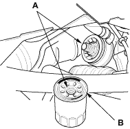
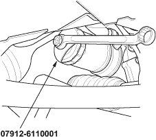
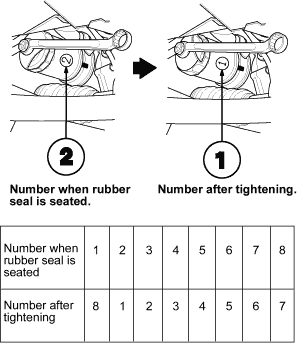

Japan-Made Oil Filter
(7/8-turn type)
- Remove the oil filter with the special oil filter wrench.
- Inspect the threads (A) and rubber seal (B) on the new filter. Wipe off the seat on the engine block, then apply a light coat of oil to the filter rubber seal. Use only filters with a built-in bypass system.

- Install the oil filter by hand.
- After the rubber seal seats, tighten the oil filter clockwise with the special tool.
Tighten:
7/8 turn clockwise.
Tightening torque:
22 Nm (2.2 kgf/m, 16 lbf/ft)


- If 8 numbers (1 to 8) are printed around the outside of the filter, use the following procedure to tighten the filter.
- Spin the filter on until its seats lightly seats against the oil cooler and note which number is at the bottom.
- Tighten the filter by turning it clockwise 7 numbers from the one you noted. For example, if number 2 is at the bottom when the seal is seated, tighten the filter until the number 1 comes around the bottom.

- After installation, fill the engine with oil up to the specified level, run the engine for more than 3 minutes, then check for oil leakage.